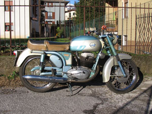
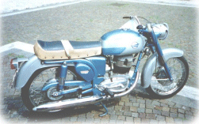

SCHEDA TECNICA
MOTORE: Monocilindrico 4 tempi, alesaggio e corsa 63 x 64 mm
Cilindrata effettiva 199,5 cc, potenza effettiva 9,6 CV a 7000 giri, rapporto di compressione 1÷7
Velocità massima 100 km/h
Carburatore Dell'Orto UBF 20 BS
Accensione a volano magnete
Cambio a 4 rapporti, trasmissione primaria ad ingranaggio, trasmissione secondaria a catena
Frizione in bagno d'olio a dischi multipli
TELAIO Tubolare a doppia culla aperta
Forcella anteriore telescopica idraulica
Sospensione posteriore a forcellone oscillante con ammortizzatori idraulici
Ruota anteriore: 2,75 x 18 Ruota posteriore: 3,00 x 18
Capacità serbatoio 16 litri
Potenza impianto elettrico 28 W
Consumo norme CUNA 2,8 litri/100 km
Candela ----
L'angolo
dei conservati 
Esemplari restaurati 